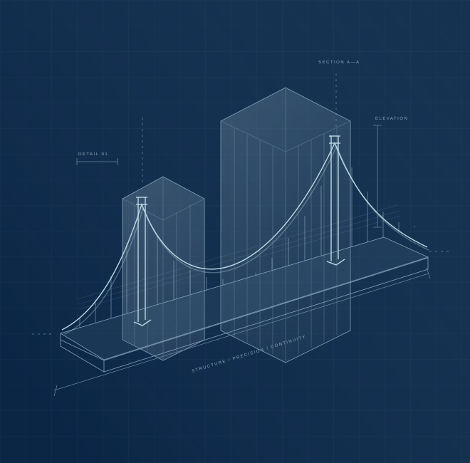

01
Design & Permit Services
Engineering and design documentation to help you understand your project and navigate the permitting process.
Explore service ↗CIVIL & STRUCTURAL ENGINEERING · DMV
Engineering expertise for the projects
and properties that matter.
Civil Structural Engineer
PLANS · PERMITS · CONSTRUCTION · INSPECTIONS

YEARS OF U.S.
GOVERNMENT PROJECT EXPERIENCE
Arlington County
·Fairfax County
·Anne Arundel County
·VDOT
01 / WHAT WE DO
From the first drawing to the details on site, find the support your project needs.
Engineering and design documentation to help you understand your project and navigate the permitting process.
Explore service ↗Field observations and inspection documentation to help owners and project teams understand construction quality and progress.
Explore service ↗Technical guidance for property owners, contractors, developers, and businesses at key stages of a project.
Explore service ↗Thoughtful repairs, maintenance, and improvements for residential and commercial properties.
Explore service ↗02 / THE EXPERIENCE BEHIND THE WORK
Decades of responsibility in government engineering, construction management, and building review bring a grounded perspective to every engagement.
Meet Ravinder Singh, P.E. ↗Arlington CountyBridge engineering & construction management leadership
Fairfax CountyBuilding plan examination & combination inspection experience
Virginia TechGraduate education in civil engineering & construction management
Previous positions describe professional experience, not current government affiliation.
03 / LOCAL UNDERSTANDING
Serving property owners and project teams across the Washington metropolitan area.
Fairfax, Loudoun, Prince William, and Arlington counties; Alexandria, Falls Church, and Manassas.
Third-party InspectionsProject support for property owners, contractors, and businesses throughout the District.
Montgomery and Prince George’s counties. Other locations are reviewed by project scope.
Service availability depends on location, scope, licensing, and jurisdiction. Read our jurisdiction notice →
LET’S BUILD WITH CLARITY
Share your project location and the support you need. We’ll discuss the next steps.